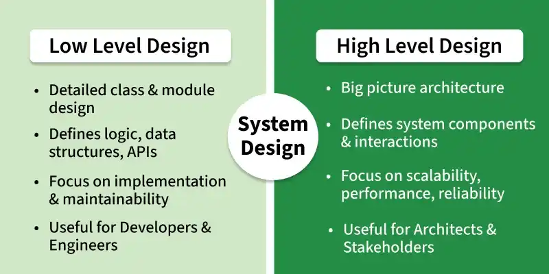

5.5 Low Level Design
Low-level design (LLD), also called detailed design, is the third and most granular level of software design. Once architectural design identifies major modules, LLD specifies the internal elements of every module — their functions, processing methods, data structures, algorithms, and control flow.
LLD is the blueprint that guides developers on how to implement specific components of a system — classes, methods, algorithms, and data structures. Whether the system is a microservice architecture, a web application, or a mobile app, a clear LLD is essential for building scalable, maintainable, and efficient software.

HLD vs LLD
HLD and LLD are both important in system design, but they focus on different levels of detail. HLD gives a big-picture view of the system; LLD focuses on the detailed implementation of each component.

| Aspect | High-Level Design (HLD) | Low-Level Design (LLD) |
|---|---|---|
| Also called | Preliminary design, architectural design, program architecture. | Detailed design, module-level design. |
| Focus | Overall system architecture — frameworks, databases, component integration, and how the system works at a broader level. | Detailed design of components and modules — interactions, behaviour, algorithms, and data structures. |
| Deliverable | Program architecture document; structure charts, UML overview diagrams. | Module specification document; pseudocode, flowcharts, class diagrams. |
| Abstraction | Modules treated as black boxes. | Internal white-box detail of every module. |
Example — e-commerce system: HLD decides the major components — user service, payment
service, inventory service, and database. LLD defines how the Order class works, what methods
it has, how it interacts with Payment and Inventory classes, and which algorithms
process an order.
What detailed design specifies
- Decomposition of major system components into program units (functions, classes, procedures).
- Allocation of functional responsibilities to each unit.
- User interfaces at the module level (forms, screens, dialogues).
- Unit states and state changes (e.g., order status: pending → confirmed → shipped).
- Data and control interaction between units within a module.
- Data packaging and implementation — scope and visibility of program elements.
- Algorithms and data structures for each unit.

Converting HLD to LLD — roadmap
To move from HLD to LLD, designers typically use UML diagrams together with OOP principles, SOLID principles, and design patterns. The process can be broken into five steps:
Step 1 — Understand object-oriented principles
User requirements are translated into design using OOP concepts, which form the foundation of LLD. A strong understanding of OOP helps build maintainable, scalable, and well-structured components. Full coverage in §5.15.
- Encapsulation: Bundling data and the methods that operate on that data within one unit.
- Inheritance: A new class inherits the properties and methods of an existing class.
- Polymorphism: Different classes respond to the same method in different ways.
- Abstraction: Hiding complex implementation details while showing only essential features.
Step 2 — Analyse and design components
LLD requires analysing real-world problems and breaking them down into object-world problems using OOP concepts. Real-world entities are modelled into objects and classes.
- Identify classes and objects based on system requirements.
- Determine relationships between entities — associations, inheritance, aggregation, composition.
- Apply SOLID principles to ensure the design is clean, maintainable, and scalable (see below).
Step 3 — Apply design patterns
Design patterns provide reusable solutions to common problems and support scalable, maintainable object-oriented design:
- Creational patterns (e.g., Singleton, Factory): deal with object creation — creating objects in a way appropriate to the situation.
- Behavioural patterns (e.g., Observer, Strategy): focus on communication between objects and how they interact.
- Structural patterns (e.g., Adapter, Composite): simplify the structure of the system and its components.
Step 4 — Use UML diagrams in LLD
Unified Modeling Language (UML) visually models components and their relationships, making the transition from HLD to LLD easier for developers. Full UML coverage in §5.16.
- Class diagrams: Structure of the system — classes and their relationships.
- Sequence diagrams: How objects interact over time — the sequence of method calls.
- Activity diagrams: Workflow or activities of a system component.
- State diagrams: Different states of a component and transitions between them.
- Use case diagrams: Functional requirements — different user interactions with the system.
Step 5 — Apply SOLID principles
SOLID is a set of five principles for writing scalable, flexible, maintainable, and reusable code. They are guidelines — not strict rules — and should be balanced against business requirements and constraints:
- Single Responsibility Principle (SRP): A class should have only one reason to change — one well-defined responsibility.
- Open-Closed Principle (OCP): Software entities should be open for extension but closed for modification.
- Liskov Substitution Principle (LSP): Subtypes must be substitutable for their base types without breaking behaviour.
- Interface Segregation Principle (ISP): Clients should not be forced to depend on interfaces they do not use.
- Dependency Inversion Principle (DIP): High-level modules should not depend on low-level modules; both should depend on abstractions.
LLD representation techniques
- Pseudocode: Language-independent algorithm description — see §5.8.
- Flowcharts: Graphical control-flow diagrams — see §5.9.
- Structure charts: Hierarchical module invocation — see §5.7.
- UML diagrams: Class, sequence, activity, and state diagrams for OOD — see §5.16.
Benefits of low-level design
- Clear component functionality: LLD provides a detailed plan for how each part of the software works, making development and debugging easier.
- Scalability and flexibility: A well-structured design makes it simpler to update or fix parts of the system without affecting the whole.
- Improved communication: Team members share a clear understanding of how components work.
- Cleaner code: Following design principles in LLD leads to more organised code that is less prone to errors.
- Faster coding: Developers can follow the detailed plan instead of making design decisions during implementation.
Best practices for LLD
- Modular design: Break the system into small, independent components with specific functionalities — see §5.6.
- Clear interfaces: Define methods, inputs, and outputs for each component to maintain proper communication.
- Use design patterns: Apply proven OOP patterns to promote code reusability, flexibility, and maintainability.
- Adopt SOLID principles: Follow SOLID guidelines for a more robust and maintainable design.
- Error handling: Plan exception handling, validation checks, and error recovery at the module level.
Module specification document
- After detailed design of each module, the outcome is documented in a module specification document.
- This document is handed to programmers for coding and to testers for deriving unit test cases.
- Structure charts, pseudocode, flowcharts, and decision tables developed during design become part of project documentation.
Q: What is low-level design? How does it differ from high-level design? What does detailed design specify?
Model answer points:
- LLD = internal specification of all modules — algorithms, data structures, control flow; blueprint for developers.
- HLD = module decomposition and interfaces (black boxes); LLD = internal white-box detail of every module.
- List 7 detailed design items: decomposition, allocation, UI, states, data/control interaction, packaging, algorithms.
- HLD → LLD roadmap: OOP principles → component analysis → design patterns → UML → SOLID.
- Deliverable = module specification document.
- Techniques: pseudocode, flowcharts, structure charts, UML.
- Benefits: clear functionality, scalability, communication, cleaner code, faster coding.